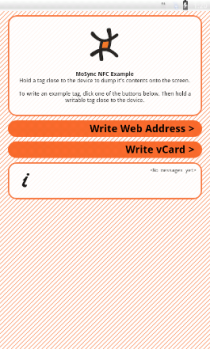

NFCExample
This example application shows how to use the MoSync NFC API which provides C syscall functions to read and write near field communication tags.

Main screen (Android Emulator)
This example runs on all platforms supported by both the MoSync Wormhole JavaScript Library and NFC C++ Library (see Feature/Platform Support). It requires a device with NFC capabilities.
This example is included in the MoSync SDK installation in the /examples folder. For information on importing the examples into your workspace, see Importing the Examples.
Behavior
- To read information from a tag, hold it close to the device. The lower text box will provide some information about the tag.
- To write sample information to a tag, click one of the two “Write...” buttons and then hold a tag close to the device.
In the Code
The following technologies are used in this application:
- The MoSync NFC API to read from and write to NFC tags.
- HTML5 & Javascript, for the design the main user-interface elements and handling of UI events.
- The MoSync Bridge Library (bridge.js) to connect to Wormhole Library.
- MoSync Wormhole Library for bi-directional communication between MoSync C++ code and HTML5/JavaScript pages.